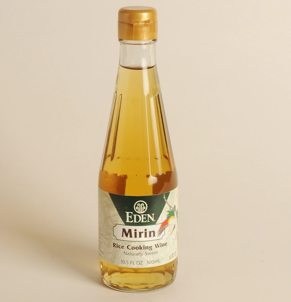

Mirin

What is Mirin?
Mirin is a sweet cooking wine that can be found in many Japanese dishes. In western culture, many people do not know of Mirin and it’s uses, so today we will go through all you need to know about the condiment. Mirin is slightly thick with an opaque, golden color. It can be used for glazing or to season a dish by adding a slight sweetness to it. Mirin can also help reduce the fishy smell of seafood, and many believe that using it will help with better absorption of flavours. People may be confused about the difference between sake and mirin. Sake has higher alcohol and lower sugar content whereas mirin has a lower alcohol and higher sugar content. The alcohol content of mirin can range from 8% to 14%. Mirin is also not to be confused with rice vinegar.

How is Mirin Made?
The seasoning is made by combining glutinous rice and shochu, a type of Japanese alcohol similar to vodka. The rice is then fermented for a few months. By fermenting the rice, a bacterial culture called Koji is created and is often used in cooking. Koji breaks down enzymes and proteins in the grains of rice resulting in left over amino acids and complex sugars that we now know as mirin. Mirin can sometimes be made with sake (which is made of mostly rice) instead of shochu (which can be made of ingredients such as sweet potato, barley, corn, etc.).

Types of Mirin
Mirin can be roughly categorized into two types: hon-mirin and aji-mirin. Hon-mirin is a Japanese term that translates to ‘true mirin’ and is considered at the most authentic and pure form of mirin. It contains no added sugar or salt and a higher amount of alcohol content. It is more expensive than aji-mirin and is usually harder to buy at the market. Aji-mirin roughly translates to ‘mirin-like taste’ and is a condiment made to taste like true mirin. It has a lower amount of alcohol content (sometimes none at all) and contains added ingredients such as corn syrup, sugar, and salt. It is highly recommended that you use hon-mirin instead of aji-mirin if you can obtain it from your local grocery store.

Cooking with Mirin
Many Japanese dishes uses mirin as a seasoning because it adds a deeper depth of flavor and luster to the food (think teriyaki sauce). It also helps with tenderizing ingredients. If you decide to cook with mirin, keep in mind to store it in a cool place. It will keep well for up to 3 months.
Some individuals may find it difficult to buy mirin based on where they live, or some may try to exempt this ingredient from their recipes due to their circumstances of not being to have alcohol. Fear not: you can make a substitution to replace the real thing. Although the taste may not be exactly the same, it is better to add your own version of the seasoning instead of completely omitting it. If you can have alcohol in your cooking, mix sake and sugar together at a 3:1 ratio respectively. If you cannot have alcohol, you can use water and sugar at a 3:1 ratio.